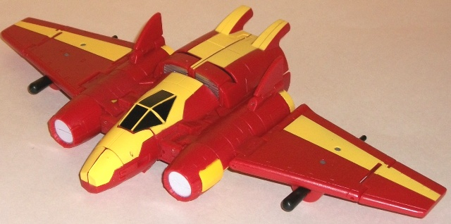
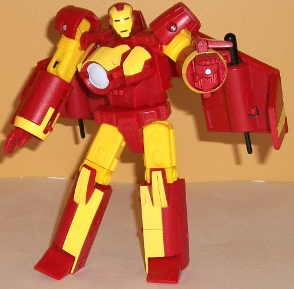
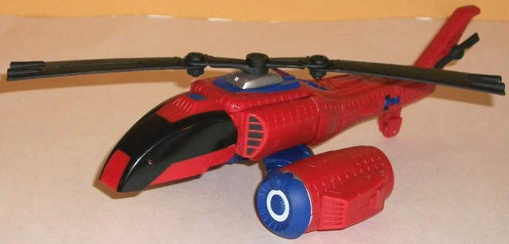
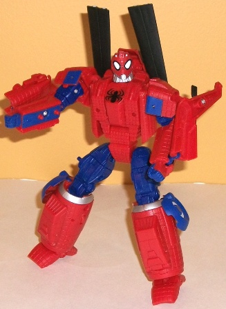
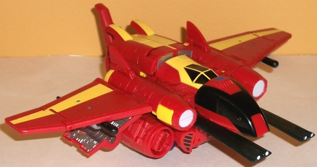
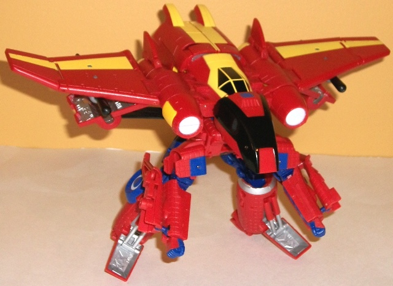

Price
: $30-35 U.S., depending upon
store
Overall Rating
: 7.3
Iron Man


Difficulty of Transformation
: Easy
Color Scheme
: Red, yellow, silver,
and some black and pale off-white
Individual Rating
: 8.5
Iron Man's vehicle mode
is still a jet, though a less traditional form of jet that has considerably
larger wings proportionally than his
other version
.
In addition, you can open up a panel underneath each wing to give Iron
Man a cool four-wing look, which also allows him to fire two spring-loaded
missiles. The proportions are more or less okay, since as far as I'm aware
this is a fictional design, but there are a few complaints I have. The
nosecone and wings are a bit TOO stubby for one, even taking into account
child safety standards. There's also no real attempt to give the jet mode
back end, as from the rear you can see Iron Man's legs folded up inside
his hollow-looking main body, with the hands visible inside his side thrusters.
He also has no landing gear to speak of, and his wing pieces can come undone
from his mech mode arm pieces a bit too easily when folding the wings up
and down. However, his color scheme is fairly nice, being the classic "red/yellow"
Iron Man scheme, but keeping the yellow at an acceptable level and in a
nice stripe pattern. The black cockpit looks great against the yellow,
too, and though compared to Spider-Man his mold detailing is relatively
sparse in this mode, there's still several panels and whatnot along his
wings to break things up while still making him look sleek. I'm also fond
of the "intakes" where the wings connect to the main body, as they look
like blasters to give Iron Man some extra firepower in this mode.
Iron Man's mech mode
is rather similar to his previous form's in that it's basically Iron Man
with wings. However, unlike the previous Marvel TF of him, this one tends
to incorporate a few more elements of Iron Man into it and looks considerably
less "stiff". The proportions are also better, with the legs not looking
so skinny this time, though I don't like how far the chest sticks out.
I DO like the nod to Iron Man's "core" in the chest, though, as well as
the "blaster" detailing on the inside of Iron Man's palms, which are molded
like he's about to fire them (they don't fire actual missiles due to their
size, however). The capped "domes" that make his shoulder armor look quite
good and have some crisp mold detailing, as do the rest of his Mech mode
parts and his head especially. His legs are also nicely-proportioned, though
his feet don't have big enough heels to let Iron Man be all that stable,
given his large wing-backpack, which is definitely this mode's biggest
flaw. I don't mind small wings, but these need to retract somehow, they're
too large proportionally. As far as articulation goes, Iron Man can move
at the neck, shoulders (at two points), elbows (at two points), wrists,
waist, hips (at two points), and knees (at two points). So, as long as
you can balance his wing-backpack properly, you can get some pretty darn
cool poses out of him.
Spider-Man


Difficulty of Transformation
: Easy
Color Scheme
: Dark blue, dull red,
black, and some white and silver
Individual Rating
: 7.3 (initial
release); 7.0 (solo release)*
This time around, Spider-Man's
alt mode is a helicopter-- well, a spider-themed helicopter, of course.
Mold detailing coveres the toy, with web-like detailing almost everywhere
in addition to expected vents, turbines, etc. The color scheme is pretty
much what you'd expect from Spider-Man-- dull red with some dark blue,
and a bit of black to even things out a bit more. He's also got a fair
amount of paint apps, particularly on the main body of the 'copter, so
that he doesn't look too "boring". The only large area with no paint apps
is the tail, really. Spider-Man has his main rotating (freely-spinning)
rotor on top, as well as another spinning rotor on the tail for good measure,
and a landing gear can fold down from near the back end as well. However,
tha tail and rotors aside, this mode is pretty weak. It has some helicopter-esque
parts, but overall it's not convincing at all. The turbines are ridiculously
large and bulbous, and are waaaay too obviously his legs folded up together--
his upper legs stick out from them, plain as day. The main body of the
helicopter is also a bit skinny, and he could really use some bonafied
mini-wings to make him look at least passably flight-worthy. The big leg-rotors
also keep the helicopter from resting level on a surface, and prevent there
from being any landing gear on the front end as well-- which is really
weird, having only one landing gear near the very back of the alt mode.
A more minor complaint is that it's fairly obvious that Spider-Man's feet
are folded up into the turbines if you look at him from a rear view.
Spider-Man's individual
Mech mode is better than his vehicle mode, but it still has some problems.
The tail sections of the helicopter just hang off his lower arms as blatant
kibble, for one, as do his rotors on his back (I've transformed them as
per the instructions in the above pic, but I think that looks rather ridiculous--
I prefer to let them hang below his waist instead). Circular pieces also
just slide onto the side of his lower legs, which doesn't look too hot
either. His helicopter cockpit just hangs behind his back, but it's completely
out of the way and doesn't interfere with movement, so I don't mind that
bit. However, other than that his proportions are pretty good, even if
his feet and lower legs seem a bit TOO rounded. His chest design is particularly
impressive, looking fairly "heroic" in proportions while still being the
result of several parts sliding together AND looking "blocky" to emphasize
its robot-esque properties. The great mold detailing continues over to
mech mode, with web-like detailing everywhere, his signature spider symbol
on his chest, and a very crisply-detailed mech head sculpt. However, I'm
not as fond of this headsculpt as I am with Spider-Man's other Marvel TF
incarnations--the silver "jaw" slightly skinnier head, and forehead-lights
make him almost look like some sorta wasp or ant as opposed to a spider.
Spider-Man can move at the neck, shoulders (at three points), elbows (at
two points), wrists, hips (at three points), knees (at two points), and
ankles (at two points). Though the aforementioned kibble gets in the way,
you can still get quite fair number of poses out of him, particularly with
his quite posable ankles to help stabilize his weight.
Combined Forms


Difficulty of Transformation
: Medium
Individual Rating
: 6.0
In addition to their
individual modes, these version so Iron Man and Spider-Man can combine
in two different ways. The first makes a few minor modifications to Spidey's
helicopter mode-- namely swinging the rotors forward to look like "guns"
and moving the leg-turbines around-- and the plunking Iron Man's vehicle
mode on top of it while opening up the quad-wings. Although this mode really
needs landing gear-- it's basically all balancing on Spidey's robot waist
part-- overall, it's actually rather decent. I like how the helicopter
cockpit comes up over Iron Man's nosecone to make one big cockpit (which
is of course suitable for a larger aircraft), and the wings opening up
into their quad-pattern makes them look bigger to accomodate the increased
size. The rotors look pretty weak as guns, though, and during transformation
they have a tendency to fall off rather easily, since Iron Man hooks into
Spider-Man right behind where the rotors are.
The other mode is so
pathetic it's hard to believe it's official, though. Basically you take
Spider-Man's robot mode, put his head back in, bend him over, and then
slam Iron Man (again in vehicle mode) on top of him. And it's meant to
look like.... Spider-Man with no head with a jet on top of him. Er....
what? How is this even practical? I do like the larger piston-feet Spider-Man
has, but... that's really the only thing I can say positive about this
mode that didn't carry over from Iron Man's vehicle mode. It looks totally
ridiculous.
This rather unique set comes with a pretty cool, though simplistic, Iron Man and a decent enough Spider-Man, but if you're getting it for the combined forms only the vehicle one is worth it. The "heavy assault" combined form is just a joke and looks doofy as all get out. Each individual toy is pretty much the same size as a normal Marvel TF, so depending on the store you buy them at, you may be spending a bit more money for less toy, as well. Thus, if you have previous versions of either of these characters, I'd advise you not to bother with this one. If you don't have a version of either of these characters AND they look good enough to you based on the pictures and descriptions above, then it's an okay pickup, just don't expect anything super-amazing.
Review by Beastbot
*The Spider-Man helicopter mold was later re-released in the Marvel Transformers Crossovers line by itself. There were slight color changes-- namely, the blue was a little duller and the red slightly lighter. However, it didn't catch the eye-- and it wasn't as true to the comics-- as much as the intial color scheme so out of the two I'd recommend the initial release w/ Iron Man to be the more preferable of the two schemes.